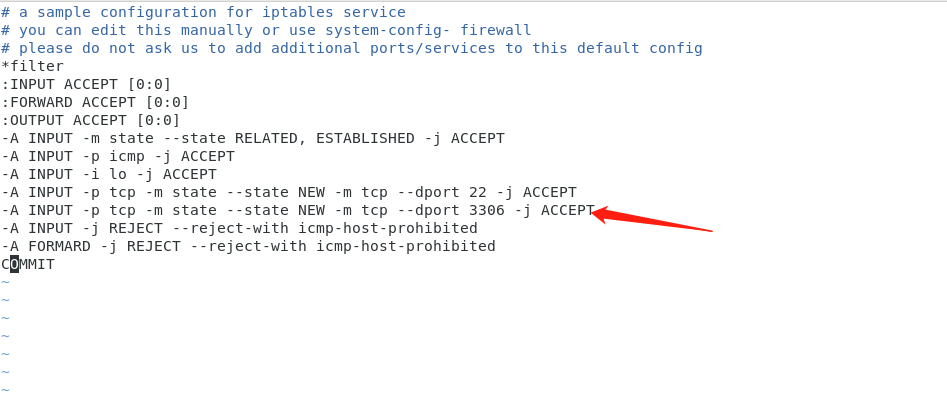
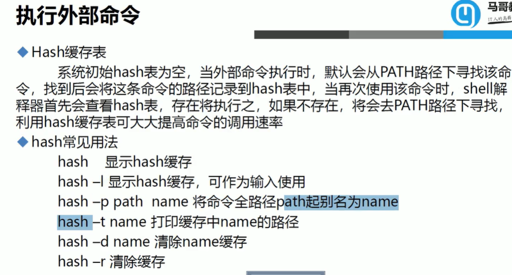

VirtualBox(free)+CentOS
download
| https://www.virtualbox.org/wiki/Downloads |
|---|
| https://mirrors.aliyun.com/centos/?spm=a2c6h.13651104.0.0.613012b2TDFhqN |
|---|
setup
安装完成后重启又进入安装界面
account
account:root
account:123
acctount:tiger
password:tiger
4. CentOS8 Linux操作系统中安装GNOME3桌面环境和GDM(GNOME Display Manager)现实环境管理器。
[root@localhost ~]# yum groupinstall “Server with GUI”
设置GDM开机启动
查看gdm.service是否启动，发现gdm服务没有启动。
[root@localhost ~]# systemctl status gdm
● gdm.service - GNOME Display Manager
Loaded: loaded (/usr/lib/systemd/system/gdm.service; enabled; vendor preset:
enabled)
Active: inactive (dead)
下面设置gdm开机启动，并立即启动该服务：
[root@localhost ~]# systemctl enable gdm –now
设置系统启动级别为graphical
默认情况，CentOS8默认启动级别为multi-user.target。
[root@localhost ~]# systemctl get-default
multi-user.target
下面设置CentOS8的启动级别为graphical.target
[root@localhost ~]# systemctl set-default graphical.target
Removed /etc/systemd/system/default.target.
Created symlink /etc/systemd/system/default.target ¡ú
/usr/lib/systemd/system/graphical.target.
[root@localhost ~]# systemctl get-default
graphical.target
VMware station 16 pro+CentOS
VMware官方网站
VMware Workstation Pro 16 发行说明
https://docs.vmware.com/en/VMware-Workstation-Pro/16/rn/VMware-Workstation-16-Pro-Release-Notes.html
VMware Workstation Pro 16 官方下载下载地址
复制下面链接打开迅雷即可下载：
https://download3.vmware.com/software/wkst/file/VMware-workstation-full-16.0.0-16894299.exe
VMware Workstation Pro 15.5.6 官方下载下载地址
复制下面链接打开迅雷即可下载：
https://download3.vmware.com/software/wkst/file/VMware-workstation-full-15.5.6-16341506.exe
VMware Workstation Pro 16 激活密钥
ZF3R0-FHED2-M80TY-8QYGC-NPKYF
YF390-0HF8P-M81RQ-2DXQE-M2UT6
ZF71R-DMX85-08DQY-8YMNC-PPHV8
VMware Workstation Pro 15 激活密钥
VF5WH-00ZDH-489KP-0QNXG-WZKRA
AA310-6UX0J-H8D1Z-C4ZXZ-MPAD0
Copyright: 采用
知识共享署名4.0
国际许可协议进行许可
Links: https://www.ssymon.com/archives/vmware-download-key
安装CentOS8.2
1.分区
i.主分区+扩展分区数<=4
逻辑分区：5、6
ii.分区规划：
/ 50G
/boot 1G
/data 30G
/swap 交换分区 2G
虚拟机设置
这里启动时连接一定要勾选上
安装—开启此虚拟机
账户
root –root
tiger –tiger
2.安装CentOS7.9
Installation destination
分区
账户
Root –root
Tiger –tiger
备份
关闭虚拟机
关闭虚拟机界面
拷贝目录
安装Ubuntu16.4
账户：wuhall 123456
Root 123456
安装Ubuntuoff16.4
拷贝Ubuntu16.4文件
账户：wuhall 123456
要点
1.图形界面不属于linux的一部分，它只是一个软件
图形界面耗内存
2. linux空格、大小写、单引号（一般识别成语句）、反向单引号/双引号（可以识别成命令）敏感
写命令行不要随意空格
3.设置–在内存中可生效，在文件中可保存
快捷键
Ctrl+alt+enter–全屏切换
Esc–显示详细信息
Ctrl+alt+f2~f6……–切换命令行界面
（linux具备多用户共用终端的特点，考虑并发，着眼于服务器端）
Ctrl+alt+f1—切换图形界面
shift+pageup–向上翻页
ctrl+d—exit
ctrl+l–clear（清屏）
ctrl+c 命令终止
bash 快捷键
ctrl+i 清屏（clear）
ctrl+o 执行当前命令，并重新显示本命令
ctrl+s 阻止屏幕输出，锁定
ctrl+q 允许屏幕输出
ctrl+c 终止命令
ctrl+z 挂起命令
日期和时间
date 查看/修改操作系统时间
date MMDDHHmmYYYY.ss
date [moth][date][hours][min][years].[second] 格式date 121816212020.35
date 032310402021.50
clock 查看/修改主板时间
clock -w 以系统时间为准
clock -s 以软件时间为准
时区
Vim 全选 全部删除 全部复制
全选（高亮显示）：按esc后，然后ggvG或者ggVG
全部复制：按esc后，然后ggyG
全部删除：按esc后，然后dG
命令行
hostnamectl 提供关于本机的基本信息
rz -be 传输大文件时用
lsb_release -a 查看ubuntu版本
ifconfig–查询ip
free -h–查询内存占用
startx–切换图形界面（不需要登录，默认只是开启一个软件）
xclock–钟表工具（只能在图形界面上使用）
init 0-关机
init 3–切换命令行界面
init 5–切换图形界面
init 6 or reboot–重启
poweroff–关机并断电
halt–关机（版本有区别）
runlevel–查询运行模式
whoami–查询当前登录人
tty–终端窗口，在命令行界面查询当前功能键f*
chvt 2~6–终端窗口，在图形界面切换命令行界面
cat /etc/centos-release–查看操作系统版本
uname -r–查看操作系统内核
lscpu–查看当前cpu型号
free -h–查看内存
cat /proc/meminfo–查看内存
lsblk–查看硬盘配置
mii-tool ens33–查看网卡
who am i–查看当前用户以及登录在哪个终端
who–查看当前有哪些用户登录
cat /etc/shells–查询系统中所有shell程序
echo $SHELL–查询当前使用的shell
/bin/[shell名称]–切换不同shell
hostname–查看主机名
echo $PS1–显示提示符格式(严格区分大小写)
PS1=”\[\e[1;35m\][\u@\h \W]\\$\[\e[0m\]”–修改显示行格式命令
nano /etc/gdm/custom.conf—设置开机自动登录
--write
[daemon]
AutomaticLoginEnable = true
AutomaticLogin = root
--show
cat /etc/gdm/custom.conf
nano /etc/motd–登录提醒
df–光盘路径
builtin（内部命令）–依赖于shell，优先级高
外部命令–表现为磁盘文件
type [命令名]–查看是内部命令还是外部命令
nmcli con modify ens33 connection.autoconnect yes –设置网卡自动连接（CentOS 7）
alias [别名]=’命令行’—使用别名
alias cdnet=’cd /etc/sysconfig/network-scripts/‘—使用别名的例子
（如此操作退出重登后就不生效了，因为没有写入文件 exit）
ls–命令用于显示指定工作目录下之内容
ls -a –显示所有文件及目录 (. 开头的隐藏文件也会列出)
.bashrc 存放用户指定别名的文件
nano .bashrc 打开存放用户指定别名的文件
写入alias cdnet=’cd /etc/sysconfig/network-scripts/‘
--如此可使该别名写入文件当中
（ctrl+x y确认 enter）
source [文件] –将该文件读入内存，让配置文件生效
. [文件] – 将该文件读入内存，让配置文件生效
cd –返回根目录
alias – 查看所有别名
unalias [别名名称] – 删除别名（只是在内存中删除掉）
whereis [命令名称] – 查看[命令名称]路径
命令格式
command [options] [arguments]
id -u -tiger –格式 命令【短格式选项】【参数】
ls –all 格式 命令 【长格式选项】
ls -l -a 列出文件详细信息
ll /etc/localtime 列出当前时区
vim – 编辑器
echo [变量名] 回显变量
echo $SHELL 回显SHELL变量路径
history 查看已执行命令的记录
（当前执行的操作命令是放在内存当中，正常情况下退出之前linux会自动将内存中的执行历史存入硬盘当中）
HISTTIMEFORMAT=”%F %T” 显示历史记录时间
pwd printing working directory打印当前目录
cd change directory 更改工作目录
Linux上传下载均是基于Linux服务器而言的
rz 上传（received）
sz [文件名] 下载（send）
在secureCRT中可更改下载路径
Linux中删除文件是remove
rm [文件名] 删除文件
rm -rf [目录名字] 删除文件夹
mkdir [文件夹名] 创建文件夹
sudo 命令
xzm@ubuntu:~$ sudo
这样输入当前管理员用户密码就可以得到超级用户的权限。但默认的情况下5分钟root权限就失效了。
sudo -i
xzm@ubuntu:~$ sudo -i
通过这种方法输入当前管理员用户的密码就可以进到root用户。
tar -zxvf 要解压的文件名 -C 要解压到哪个路径下
tar在Linux上是常用的打包、压缩、加压缩工具，他的参数很多，折里仅仅列举常用的压缩与解压缩参数
参数：
-c ：create 建立压缩档案的参数；
-x ： 解压缩压缩档案的参数；
-z ： 是否需要用gzip压缩；
-v： 压缩的过程中显示档案；
-f： 置顶文档名，在f后面立即接文件名，不能再加参数
sudo命令以系统管理者的身份执行指令
sudo -i 输入当前管理员用户的密码就可以进到root用户
移动文件
mv 【选项】 源文件 目标文件
选项：
-f：强制覆盖，如果目标文件已经存在，则不询问，直接强制覆盖；
-i：交互移动，如果目标文件已经存在，则询问用户是否覆盖（默认选项）；
-n：如果目标文件已经存在，则不会覆盖移动，而且不询问用户；
-v：显示文件或目录的移动过程；
-u：若目标文件已经存在，但两者相比，源文件更新，则会对目标文件进行升级；
iptables [-t table] COMMAND chain CRETIRIA -j ACTION
-t table ：3个filter nat mangle
COMMAND：定义如何对规则进行管理
chain：指定你接下来的规则到底是在哪个链上操作的，当定义策略的时候，是可以省略的
CRETIRIA:指定匹配标准
-j ACTION :指定如何进行处理
| -L | 查看规则链 | iptables -L |
|---|
iptables -L -n -v 查看规则链详细信息
help
使用方法
命令 –help作用于外部命令；
ls –help
1
help 命令 作用于内部命令；
help cd
1
是否内外部命令可以通过type 命令的方式查看；
type cd
特殊符号
https://www.cnblogs.com/lidabo/p/4323979.html
| 管道 (pipeline)
是 UNIX 系统，基础且重要的观念。连结上个指令的标准输出，做为下个指令的标准输入。
lsof -i:80|grep nginx|awk ‘{print $2}’|xargs kill -9
问题场景
1.在root账号下写入别名cdnet， ctrl+alt+f2(切换命令行界面，更换tiger账号登录) 使用别名cdnet，不生效。
每个账号都有自己独自的home文件夹；
解决方案 写入到/etc/bashrc
命令行操作 nano /etc/bashrc
2.命令嵌套执行
可以使用` `（反向单引号） or $( ) 进行包裹
3.设置网卡自动连接
使用nmcli c reload命令重启网络服务
4.secureCRT连接Ubuntu16被拒
The remote system refused the connection.
【解决】
sudo -i 进入root账户
sudo apt-get update
apt-get install openssh-server
Navicat连接mysql（centos7）失败
使用telnet工具检测对centos7 3306端口是否能ping通
telnet 192.168.21.58 3306
2.安装 iptables-services
yum -y install iptables-services
3.开启3306端口
vim /etc/sysconfig/iptables

# a sample configuration for iptables service
# you can edit this manually or use system-config- firewall
# please do not ask us to add additional ports/services to this default config
*filter
:INPUT ACCEPT [0:0]
:FORWARD ACCEPT [0:0]
:OUTPUT ACCEPT [0:0]
-A INPUT -m state –state RELATED, ESTABLISHED -j ACCEPT
-A INPUT -p icmp -j ACCEPT
-A INPUT -i lo -j ACCEPT
-A INPUT -p tcp -m state –state NEW -m tcp –dport 22 -j ACCEPT
-A INPUT -p tcp -m state –state NEW -m tcp –dport 3306 -j ACCEPT
-A INPUT -j REJECT –reject-with icmp-host-prohibited
-A FORMARD -j REJECT –reject-with icmp-host-prohibited
COMMIT
4.重启防火墙失败
service iptables restart
启动防火墙失败
5.关闭firewalld
systemctl stop firewalld
systemctl mask firewalld
使用iptables服务:
#开放3306端口
iptables -A INPUT -p tcp –dport 3306 -j ACCEPT
#保存上述规则
service iptables save
service iptables restart #重启防火墙
systemctl enable iptables.service #设置开机自动启动
6.如果还是连接不上就直接重启centos即可连接
7.总结
参考：https://www.cnblogs.com/huizhipeng/p/10127333.html
原因：防火墙对外端口没有开，以上iptables和firewalld均是防火墙软件
一下使用centos自带firewall开放3306端口
1.关闭iptable开机启动
systemctl disable iptables.service
2.关闭iptable服务
service iptables stop
3.查看iptable服务状态
systemctl status iptables
如果还是active ，选择reboot
4.开启firewall
systemctl start firewalld.service
systemctl unmask firewalld
systemctl start firewalld.service
## zone – 作用域
## add-port=80/tcp – 添加端口，格式为：端口/通讯协议
## permanent – 永久生效，没有此参数重启后失效
firewall-cmd –zone=public –add-port=3306/tcp –permanent
## 开启3306端口后，workbench或naivcat 就能连接到MySQL数据库了
##重启防火墙
firewall-cmd –reload
设置开机启动
systemctl enable firewalld
ubuntu16 设置静态ip
参考：https://www.jianshu.com/p/d69a95aa1ed7
文件/etc/network/interfaces
auto enp7s0
iface enp7s0 inet static
address 10.0.208.222
netmask 255.255.240.0
gateway 10.0.208.1
dns-nameservers 218.2.135.1
刷新ip
sudo ip addr flush enp7s0
sudo systemctl restart networking.service
Ubuntu16 修改时间
参考：https://blog.csdn.net/zhengchaooo/article/details/79500032
先查看当前系统时间
root@ubuntu:/# date -R
结果时区是：-0500
我需要的是东八区，这儿显示不是，所以需要设置一个时区
1.运行tzselect
root@ubuntu:/# tzselect
在这里我们选择亚洲 Asia，确认之后选择中国（China)，最后选择北京(Beijing)
2.复制文件到/etc目录下
root@ubuntu:/# cp /usr/share/zoneinfo/Asia/Shanghai /etc/localtime
3.再次查看时间date -R，已经修改为北京时间
改时间
修改时间
sudo date -s MM/DD/YY //修改日期
sudo date -s hh:mm:ss //修改时间
在修改时间以后，修改硬件CMOS的时间
sudo hwclock –systohc //非常重要，如果没有这一步的话，后面时间还是不准
timedatectl set-timezone Asia/Shanghai
使用mysqldump + crontab 定时对mysql数据库进行全量备份
参考：https://blog.csdn.net/weixin_34289454/article/details/92978348
https://www.runoob.com/w3cnote/linux-crontab-tasks.html
crontab [-u username] //省略用户表表示操作当前用户的crontab
-e (编辑工作表)
-l (列出工作表里的命令)
-r (删除工作作)
这两个文件输出路径要提前创建好
logpath=’/data/mysqlbak/zhjlbackuplog’
datapath=’/data/mysqlbak/zhjl’
脚本：
| #!/bin/bash #数据库IP dbserver=’127.0.0.1’ #数据库用户名 dbuser=’root’ #数据密码 dbpasswd=‘utone@727’ #数据库,如有多个库用空格分开 dbname=’zhjldb’ #备份时间 backtime=`date +%Y%m%d` #备份输出日志路径 logpath=’/data/mysqlbak/zhjlbackuplog’ datapath=’/data/mysqlbak/zhjl’ echo “################## ${backtime} #############################“ echo “开始备份” #日志记录头部 echo “” >> ${logpath}/mysqlback.log echo “————————————————-“ >> ${logpath}/mysqlback.log echo “备份时间为${backtime},备份数据库表 ${dbname} 开始” >> ${logpath}/mysqlback.log #正式备份数据库 for table in $dbname; do source=`mysqldump -h ${dbserver} -u ${dbuser} -p${dbpasswd} ${table} > ${datapath}/${backtime}.sql` 2>> ${logpath}/mysqlback.log; #备份成功以下操作 if [ “$?” == 0 ];then cd ${datapath} #为节约硬盘空间，将数据库压缩 tar zcf ${table}${backtime}.tar.gz ${backtime}.sql > /dev/null #删除原始文件，只留压缩后文件 rm -f ${datapath}/${backtime}.sql #删除七天前备份，也就是只保存7天内的备份 find ${datapath} -name “*.tar.gz” -type f -mtime +7 -exec rm -rf {} \; > /dev/null 2>&1 echo “数据库表 ${dbname} 备份成功!!” >> ${logpath}/mysqlback.log else #备份失败则进行以下操作 echo “数据库表 ${dbname} 备份失败!!” >> ${logpath}/mysqlback.log fi done echo “完成备份” echo “################## ${backtime} #############################“ |
|---|
为脚本添加执行权限
#chmod +x /data/mysqlbak/mysqlbak.sh
配置定时任务执行脚本
#crontab -e
00 02 * * * /data/mysqlbak/mysqlbak.sh
linux文件属主与属组

从左至右第一个字符代表文件类型
当为[ d ]则是目录
当为[ - ]则是文件；
若是[ l ]则表示为链接文档(link file)；
若是[ b ]则表示为装置文件里面的可供储存的接口设备(可随机存取装置)；
若是[ c
]则表示为装置文件里面的串行端口设备，例如键盘、鼠标(一次性读取装置)。
chown [–R] 属主名 文件名
chown [-R] 属主名：属组名 文件名
iptables删除已有规则
iptables -nL –line-number
显示每条规则链的编号iptables -D FORWARD 2
使用ufw 开放端口、删除规则
https://cloud.tencent.com/developer/article/1326431
# 启用防火墙
sudo ufw enable
# 查看状态
sudo ufw status
# 添加规则
sudo ufw allow 8080
# 删除规则
ufw status numbered
ufw delete 【规则号】
ufw 允许指定ip 访问
https://cmd5.la/zixun/article_28.htm
ufw allow from 192.168.131.0/24 to any port 80
在文件末尾追加内容
# 将“abc”写入到abc.txt,若没有abc.txt文件则会自动创建
echo abc > abc.txt
# 将“ddddd”追加到abc.txt文本末尾
echo ddddd >> abc.txt
mysql command not found
find / -name mysql -print
找到mysql命令的完整路径
/data/mysql/bin/mysqladmin flush-hosts
mysql#XW@2020
将A（Linux）机器中的文件传输到B（Linux）机器中
登录A
sftp username@ip
键入密码即可建立sftp连接
pwd 查看当前目录 为 /
可见该文件夹不可写入
cd /vmfs/volumes/Datastore131.5b
put filename
这步转换是为了验证上传的vmdk文件可以被exsi软件正常识别
vmkfstools -i file1 file2
在后台执行jar包
https://www.cnblogs.com/linnuo/p/9084125.html
nohup java -jar jarName.jar & //nohup表示不挂断，&表示在后台执行
nohup java -jar jarName.jar >log.txt & // > 输出文件，如果文件不存在会创建
Docker
https://www.runoob.com/docker/docker-hello-world.html
安装：
curl -fsSL https://get.docker.com | bash -s docker –mirror Aliyun
创建容器
docker run -itd -p 80:80 -p 8081:8081 -p 3336:3336 -p 8001:22 –name dev_common
ubuntu:20.04 /bin/bash
//创建容器，并进入，其中/bin/bash 为 交互式 shell， -p 宿主机端口:容器端口
映射端口
docker ps -a
//查看所有容器
进入容器
docker exec -it 243c32535da7 /bin/bash
镜像导入导出
docker export 容器id >文件名.tar
//导出容器快照到本地
docker import dev_web.tar dev_web
//将快照文件导入为本地镜像
docker run -itd -p 80:80 -p 8081:8081 -p 3336:3336 -p 8001:22 –name dev_web
--privileged dev_web:latest /usr/sbin/init
//启动镜像
【注】 这里使用 –-privileged 不然创建的容器无法使用systemctl，生产环境不建议使用
docker run -itd -p 8888:8888 –name dev_dlv2 dev_web:latest /bin/bash
建立软连接
linux 软链接的创建相当于windows的快捷方式
ln -s 【源地址】 【软链接地址】
ln -s ./testln2 testln1
注意源地址 与 软链接地址后面均不要加 /
删除软链接
rm -rf /软链接地址
注意这里后面也不要加 / ,ubuntu自动补全这个/ ，意味删除这个目录
ubuntu 更改用户密码
passwd username
activity流程引擎在ubuntu环境上显示为乱码
原因：ubuntu 环境字体缺失
解决方案：
https://blog.csdn.net/wangxintong_1992/article/details/81194896
安装工具查看已安装字体
yum install -y fontconfig mkfontscale
apt-get -y install fontconfig xfonts-utils
安装字体，将windows中常用字体全部拷贝至此文件夹
/usr/share/fonts/
然后建立字体索引信息，更新字体缓存，使用如下命令：
cd /usr/share/fonts/
mkfontscale
mkfontdir
fc-cache
查看是否安装成功
fc-list :lang=zh
安装secureCRT8.7（连接工具）
secureCRT下载
https://www.vandyke.com/cgi-bin/releases.php?product=securecrt
注册机破解
secureCRT设置
optionsession optionterminalemulationmaped keys
optionsession optionterminalemulationmaped keys
复制操作（保留原设置、更改ip）

更改1
更改2
右键propertiesSSH2 更改ip
补充：SSH(secure shell) 安全外壳协议，常用于远程操作
Linux启动过程
参考：https://www.runoob.com/linux/linux-system-boot.html
内核引导—运行init—系统初始化—建立终端—用户登录
Linux系统目录结构
参考：https://www.runoob.com/linux/linux-system-contents.html
/bin：
bin 是 Binaries (二进制文件) 的缩写, 这个目录存放着最经常使用的命令。/boot：
这里存放的是启动 Linux 时使用的一些核心文件，包括一些连接文件以及镜像文件。/dev ：
dev 是 Device(设备) 的缩写, 该目录下存放的是 Linux 的外部设备，在 Linux
中访问设备的方式和访问文件的方式是相同的。/etc：
etc 是 Etcetera(等等)
的缩写,这个目录用来存放所有的系统管理所需要的配置文件和子目录。/home：
用户的主目录，在 Linux
中，每个用户都有一个自己的目录，一般该目录名是以用户的账号命名的，如上图中的
alice、bob 和 eve。/lib：
lib 是 Library(库)
的缩写这个目录里存放着系统最基本的动态连接共享库，其作用类似于 Windows 里的
DLL 文件。几乎所有的应用程序都需要用到这些共享库。/lost+found：
这个目录一般情况下是空的，当系统非法关机后，这里就存放了一些文件。**/.**：
linux 系统会自动识别一些设备，例如U盘、光驱等等，当识别后，Linux
会把识别的设备挂载到这个目录下。/mnt：
系统提供该目录是为了让用户临时挂载别的文件系统的，我们可以将光驱挂载在 /mnt/
上，然后进入该目录就可以查看光驱里的内容了。/opt：
opt 是 optional(可选)
的缩写，这是给主机额外安装软件所摆放的目录。比如你安装一个ORACLE数据库则就可以放到这个目录下。默认是空的。/proc：
proc 是 Processes(进程) 的缩写，/proc
是一种伪文件系统（也即虚拟文件系统），存储的是当前内核运行状态的一系列特殊文件，这个目录是一个虚拟的目录，它是系统内存的映射，我们可以通过直接访问这个目录来获取系统信息。这个目录的内容不在硬盘上而是在内存里，我们也可以直接修改里面的某些文件，比如可以通过下面的命令来屏蔽主机的ping命令，使别人无法ping你的机器：
/usr：
usr 是 unix shared resources(共享资源)
的缩写，这是一个非常重要的目录，用户的很多应用程序和文件都放在这个目录下，类似于
windows 下的 program files 目录。/usr/bin：
系统用户使用的应用程序。/usr/sbin：
超级用户使用的比较高级的管理程序和系统守护程序。/usr/src：
内核源代码默认的放置目录。
Linux网络模式
参考：https://blog.csdn.net/lcr_happy/article/details/59482955
1、bridged(桥接模式)直接连接物理网络
该模式下，VMWare虚拟出来的操作系统就像是局域网中的一台独立的主机，它可以访问网内任何一台机器。在桥接模式下，你需要手工为虚拟
系统配置IP地址、子网掩码，而且还要和宿主机器处于同一网段，这样虚拟系统才能和宿主机器进行通信。同时，由于这个虚拟系统是局域网中的一个独立的主机
系统，那么就可以手工配置它的TCP/IP配置信息，以实现通过局域网的网关或路由器访问互联网。
使用桥接模式的虚拟系统和宿主机器的关系，就像连接在同一个Hub上的两台电脑。想让它们相互通讯，你就需要为虚拟系统配置IP地址和子网掩码，否则就无法通信。
如果你想利用VMWare在局域网内新建一个虚拟服务器，为局域网用户提供网络服务，就应该选择桥接模式。
2、host-only(主机模式)与主机共享专用网络
在某些特殊的网络调试环境中，要求将真实环境和虚拟环境隔离开，这时你就可采用host-only模式。在host-only模式中，所有的虚拟系统是可以相互通信的，但虚拟系统和真实的网络是被隔离开的。
提示:在host-only模式下，虚拟系统和宿主机器系统是可以相互通信的，相当于这两台机器通过双绞线互连。
在host-only模式下，虚拟系统的TCP/IP配置信息(如IP地址、网关地址、DNS服务器等)，都是由VMnet1(host-only)虚拟网络的DHCP服务器来动态分配的。
如果你想利用VMWare创建一个与网内其他机器相隔离的虚拟系统，进行某些特殊的网络调试工作，可以选择host-only模式。
3、NAT(网络地址转换模式)共享主机ip
在NAT网络中，会使用到VMnet8虚拟交换机，Host上的VMware Network Adapter
VMnet8虚拟网卡被连接到VMnet8交换机上，来与Guest进行通信，但是VMware Network
Adapter
VMnet8虚拟网卡仅仅是用于和VMnet8网段通信用的，它并不为VMnet8网段提供路由功能，处于虚拟NAT网络下的Guest是使用虚拟的NAT服务器连接的Internet的。
这时候，你的Guest和Host就可以实现互访了，并且如果你的Host此时已经连接到了Internet，那么你的Guest也就可以连上Internet了。那么VMware
Network Adapter
VMnet8虚拟网卡在这里扮演了一个什么角色呢？它仅仅是为Host和NAT虚拟网络下的Guest通信提供一个接口，所以，即便Disable掉这块虚拟网卡，Guest仍然是可以上网的，只是Host无法再访问VMnet8网段而已。
这种方式的时候，主机需要开启vmdhcp和vmnat服务。
使用NAT模式，就是让虚拟系统借助NAT(网络地址转换)功能，通过宿主机器所在的网络来访问公网。也就是说，使用NAT模式可以实现在虚拟
系统里访问互联网。NAT模式下的虚拟系统的TCP/IP配置信息是由VMnet8(NAT)虚拟网络的DHCP服务器提供的，无法进行手工修改，因此虚
拟系统也就无法和本局域网中的其他真实主机进行通讯。采用NAT模式最大的优势是虚拟系统接入互联网非常简单，你不需要进行任何其他的配置，只需要宿主机
器能访问互联网即可。
如果你想利用VMWare安装一个新的虚拟系统，在虚拟系统中不用进行任何手工配置就能直接访问互联网，建议你采用NAT模式。
提示:以上所提到的NAT模式下的VMnet8虚拟网络，host-only模式下的VMnet1虚拟网络，以及bridged模式下的
VMnet0虚拟网络，都是由VMWare虚拟机自动配置而生成的，不需要用户自行设置。VMnet8和VMnet1提供DHCP服务，VMnet0虚拟
网络则不提供
二、三种模式的本质区别
网络模式
我们首先说一下VMware的几个虚拟设备
VMnet0：用于虚拟桥接网络下的虚拟交换机
VMnet1：用于虚拟Host-Only网络下的虚拟交换机
VMnet8：用于虚拟NAT网络下的虚拟交换机
VMware Network
Adepter VMnet1：Host用于与Host-Only虚拟网络进行通信的虚拟网卡
VMware Network Adepter VMnet8：Host用于与NAT虚拟网络进行通信的虚拟网卡
安装了VMware虚拟机后，会在网络连接对话框中多出两个虚拟网卡。
1）桥接网络模式
桥接网络是指本地物理网卡和虚拟网卡通过VMnet0虚拟交换机进行桥接，物理网卡和虚拟网卡在拓扑图上处于同等地位(虚拟网卡既不是Adepter
VMnet1也不是Adepter VMnet8)。
这里的VMnet0相当于一个交换机，最终通过这个虚拟交换机使其两端在一个网段中。
那么物理网卡和虚拟网卡就相当于处于同一个网段，虚拟交换机就相当于一台现实网络中的交换机。所以两个网卡的IP地址也要设置为同一网段。
如果使虚拟机使用桥接模式连接网络，在运行cmd命令后产看两个IP，可以发现IPv4的IP
和虚拟机处于一个网段。
物理网卡和虚拟网卡的IP地址处于同一个网段，子网掩码、网关、DNS等参数都相同。两个网卡在拓扑结构中是相对独立的。
桥接网络模式是VMware虚拟机中最简单直接的模式。安装虚拟机时它为默认选项。
在桥接模式下，虚拟机和宿主计算机处于同等地位，虚拟机就像是一台真实主机一样存在于局域网中。因此在桥接模式下，我们就要像对待其他真实计算机一样为其配置IP、网关、子网掩码等等。
当我们可以自由分配局域网IP时，使用桥接模式就可以虚拟出一台真实存在的主机。
2）NAT模式
在NAT网络中，会用到VMware
Network Adepter
VMnet8虚拟网卡，主机上的VMware Network Adepter
VMnet8虚拟网卡被直接连接到VMnet8虚拟交换机上与虚拟网卡进行通信。
VMware Network Adepter
VMnet8虚拟网卡的作用仅限于和VMnet8网段进行通信，它不给VMnet8网段提供路由功能，所以虚拟机虚拟一个NAT服务器，使虚拟网卡可以连接到Internet。在这种情况下，我们就可以使用端口映射功能，让访问主机80端口的请求映射到虚拟机的80端口上。
VMware Network Adepter
VMnet8虚拟网卡的IP地址是在安装VMware时由系统指定生成的，我们不要修改这个数值，否则会使主机和虚拟机无法通信。

虚拟出来的网段和NAT模式虚拟网卡的网段是一样的，都为192.168.111.X，包括NAT服务器的IP地址也是这个网段。在安装VMware之后同样会生成一个虚拟DHCP服务器，为NAT服务器分配IP地址。
当主机和虚拟机进行通信的时候就会调用VMware Network Adepter
VMnet8虚拟网卡，因为他们都在一个网段，所以通信就不成问题了。
实际上，VMware Network Adepter
VMnet8虚拟网卡的作用就是为主机和虚拟机的通信提供一个接口，即使主机的物理网卡被关闭，虚拟机仍然可以连接到Internet，但是主机和虚拟机之间就不能互访了。
在NAT模式下，宿主计算机相当于一台开启了DHCP功能的
路由器，而虚拟机则是内网中的一台真实主机，通过路由器(宿主计算机)DHCP动态获得网络参数。因此在NAT模式下，虚拟机可以访问外部网络，反之则不行，因为虚拟机属于内网。
使用NAT模式的方便之处在于，我们不需要做任何网络设置，只要宿主计算机可以连接到外部网络，虚拟机也可以。
NAT模式通常也是大学校园网Vmware最普遍采用的连接模式，因为我们一般只能拥有一个外部IP。很显然，在这种情况下，非常适合使用NAT模式。
3)host-only模式
在Host-Only模式下，虚拟网络是一个全封闭的网络，它唯一能够访问的就是主机。其实Host-Only网络和NAT网络很相似，不同的地方就是
Host-Only网络没有NAT服务，所以虚拟网络不能连接到Internet。主机和虚拟机之间的通信是通过VMware
Network Adepter
VMnet1虚拟网卡来实现的。

同NAT一样，VMware Network Adepter
VMnet1虚拟网卡的IP地址也是VMware系统指定的，同时生成的虚拟DHCP服务器和虚拟网卡的IP地址位于同一网段，但和物理网卡的IP地址不在同一网段。
Host-Only的宗旨就是建立一个与外界隔绝的内部网络，来提高内网的安全性。这个功能或许对普通用户来说没有多大意义，但大型服务商会常常利用这个功能。如果你想为VMnet1网段提供路由功能，那就需要使用RRAS，而不能使用XP或2000的ICS，因为ICS会把内网的IP地址改为
192.168.0.1，但虚拟机是不会给VMnet1虚拟网卡分配这个地址的，那么主机和虚拟机之间就不能通信了。
在Host-only模式下，相当于虚拟机通过双绞线和宿主计算机直连，而宿主计算机不提供任何路由服务。因此在Host-only模式下，虚拟机可以和宿主计算机互相访问，但是虚拟机无法访问外部网络。
当我们要组成一个与物理网络相隔离的虚拟网络时，无疑非常适合使用Host-only模式。
设置centos7 固定ip
原始
cat /etc/sysconfig/network-scripts/ifcfg-ens33
| TYPE=Ethernet PROXY_METHOD=none BROWSER_ONLY=no BOOTPROTO=dhcp DEFROUTE=yes IPV4_FAILURE_FATAL=no IPV6INIT=yes IPV6_AUTOCONF=yes IPV6_DEFROUTE=yes IPV6_FAILURE_FATAL=no IPV6_ADDR_GEN_MODE=stable-privacy NAME=ens33 UUID=578a57b6-4eba-4aad-abe0-fd2aac94f895 DEVICE=ens33 ONBOOT=yes |
|---|
修改如下内容
BOOTPROTO=”static” #dhcp改为static
ONBOOT=”yes” #开机启用本配置
IPADDR=192.168.7.106 #静态IP
GATEWAY=192.168.7.1 #默认网关
NETMASK=255.255.255.0 #子网掩码
DNS1=192.168.7.1 #DNS 配置
重启网络服务
service network restart
基本操作
-用户登录
--root
接近完整的系统控制
--普通用户
权限有限
--如何区分root&normal
#–root $–normal
【CLI】id -u
0–root not 0—normal
-terminal
-交互式接口（启动终端后，在终端设备附加的一个交互式应用程序）
GUI（Graphic User Interface）
CLI（Command Line Interface）
--基于shell程序
Eg.bash(bourn again shell)
-shell扩展（shell提供用户与内核交互的接口）
cat /etc/shells–查看所有shell
echo $SHELL–查看当前shell
不同shell 语法略有不同
/bin/[shell名称]–切换不同shell
目录
[root@centos7 ~]#–其中~就代表当前用户目录即/root
echo $PS1–显示提示符格式(严格区分大小写)
PS1=”\[\e[1;35m\][\u@\h \W]\\$\[\e[0m\]”–修改显示行格式命令
linux中保存必须写到文件内
-利用nano软件
nano /etc/profile.d/[文件名].s–新建文件
builtin（内部命令）–依赖于shell，优先级高
外部命令–表现为磁盘文件
type [命令名]–查看是内部命令还是外部命令

缓存cache–将磁盘中已经被执行的命令放到内存中，下次使用该数据，直接从内存中读取
命令行执行优先级
alias（在于内部命令重名的情况） — 内部命令 – hash表（执行外部命令的路径）
--$PATH （path变量找路径）-–命令找不到
命令格式
whereis [命令名称] – 查看[命令名称]路径
命令格式
command [options] [arguments]
id -u -tiger 格式 命令【短格式选项】【参数】
ls –all 格式 命令 【长格式选项】
简单命令
Screen是一个可以在多个进程之间多路复用一个物理终端的全屏窗口管理器。Screen中有会话的概念，用户可以在一个screen会话中创建多个screen窗口，在每一个screen窗口中就像操作一个真实的telnet/SSH连接窗口那样。
screen -S 【会话名称】 创建screen会话
screen -x 【会话名称】 加入screen会话
echo -n hello
echo -n “hello” 加引号，开启解释功能
echo -e “\a” 发出警告声
sleep 5；echo -e “\a” 加分号；在执行某个操作之后，发出警告声
获取帮助
whatis [命令名称] 简要说明该命令的功能
help [内部命令] 用来查看内部命令的帮助
man [外部命令] 查看外部命令帮助
网站
Linux之绝对和相对路径
安装开发环境Jdk1.8的安装
参考：https://www.cnblogs.com/sxdcgaq8080/p/7492426.html
卸载系统自带java相关文件（使用root账户操作）
java -version 查看当前java版本
rpm -qa |grep java 查看包含java字符串的文件
删除（.noarch 文件不用删除）
rpm -e –nodeps java-1.8.0-openjdk-1.8.0.262.b10-1.el7.x86_64
rpm -e –nodeps java-1.8.0-openjdk-headless-1.8.0.262.b10-1.el7.x86_64
dowload jdk1.8
https://www.oracle.com/cn/java/technologies/javase/javase-jdk8-downloads.html
上传jdk文件
cd / 切换至 / 目录下
mkdir devkits 创建devkits目录
cd /devkits
mkdir jdk
rz 上传jdk

解压jdk
cd [jdk存放目录]
tar -zxvf jdk-8u271-linux-x64.tar.gz 解压jdk
删除jdk安装包
rm -f jdk-8u271-linux-x64.tar.gz
配置JDK环境变量
①编辑全局变量
在命令行键入：
vim /etc/profile
命令说明：
vim 文本编辑
/etc/profile 全局变量文件
进入文本编辑状态下，光标走到文件最后一行，键盘按下：
i
进入插入状态：
在文本的最后一行粘贴如下：
注意JAVA_HOME=/usr/java/jdk1.8.0_144 就是你自己的目录
#java environment
export JAVA_HOME=/usr/java/jdk1.8.0_144
export
CLASSPATH=.:${JAVA_HOME}/jre/lib/rt.jar:${JAVA_HOME}/lib/dt.jar:${JAVA_HOME}/lib/tools.jar
export PATH=$PATH:${JAVA_HOME}/bin
【注】：CentOS6上面的是JAVAHOME，CentOS7是{JAVA_HOME}
键盘：
ESC
shift+q
键盘：
qw!
写入并强制退出。
如果不管用可以键盘：
x
一个意思，都是保存并退出的意思。
-————————————————————————第五步—————————————————————————
让刚刚设置的环境变量生效并检查是否安装成功
①让刚刚设置的环境变量生效
键入：
source /etc/profile
source /etc/profile或 . /etc/profile
②检查是否配置成功
键入：
java -version
================================================完成======================================================
终于完成了，步骤很简单，但是对于入门命令都不晓得的，可以参考：
http://www.cnblogs.com/sxdcgaq8080/p/7470796.html
tomcat8.5的安装
参考：https://cloud.tencent.com/developer/article/1333879
下载tomcat
https://tomcat.apache.org/download-80.cgi
上传、解压、删除tomcat安装包
指定jdk
以上jdk1.8的安装用的是全局配置
开放端口
#开放8080端口&&重新加载防火墙规则
firewall-cmd –add-port=8080/tcp –permanent && firewall-cmd –reload
设置开机启动
#创建Tomcat8服务文件
vim /usr/lib/systemd/system/tomcat8.service
#tomcat8.service文件内容：
[Unit]
Description=Tomcat8
After=syslog.target network.target remote-fs.target nss-lookup.target
[Service]
Type=forking
ExecStart=/devkits/tomcat/apache-tomcat-8.5.61/bin/startup.sh
ExecReload=/devkits/tomcat/apache-tomcat-8.5.61/bin/startup.sh
ExecStop=/devkits/tomcat/apache-tomcat-8.5.61/bin/shutdown.sh
[Install]
WantedBy=multi-user.target
在catalina.sh中为Tomcat添加启动参数
在/devkits/tomcat/apache-tomcat-8.5.61/bin/catalina.sh文件开头添加JAVA_HOME和JRE_HOME，其中jdk1.8.0_27为jdk的安装目录
export JAVA_HOME=/devkits/jdk/jdk1.8.0_271
export JRE_HOME=/devkits/jdk/jdk1.8.0_271/jre
配置开机启动
#设置Tomcat8开机启动
systemctl enable tomcat8
reboot 重启
systemctl status apache-tomcat-8.5.61.service 查看启动状态
设置开机启动失败原因
原因一：
命令行
systemctl status apache-tomcat-8.5.61.service 查看启动状态
原因二：
jdk安装目录：/devkits/jdk/jdk1.8.0_271/
需要在catalina.sh中添加JAVA_HOME & JRE_HOME
Centos7 安装maven
https://blog.csdn.net/xiaolinlangzi/article/details/83056698
Ubuntu16 tomcat 卸载与安装
卸载：
关闭tomcat服务
找到tomcat 安装目录 删除 rm -rf /usr/java/tomcat/apache-tomcat-8.5.31
卸载至指定目录
配置环境变量 apache-tomcat-9.0.43
Ubuntu16 Nginx 离线安装
参考：https://blog.csdn.net/yh0503/article/details/88681145
常用命令（前提有条件是要进入到nginx目录中去）：
cd /devkits/nginx/nginx-1.18.0/sbin/
启动
./nginx
关闭
./nginx -s stop
重新加载
./nginx -s reload
ubuntu 16.04彻底卸载nginx
参考：https://blog.csdn.net/weixin_42424269/article/details/88988249
Mysql5.7（Ubuntu16.04）的离线安装
+开放3306端口 设置访问权限
https://blog.csdn.net/freezingxu/article/details/77088506
密码：utone@727
参考：https://www.cnblogs.com/itzlg/p/10975842.html（离线安装）
https://www.cnblogs.com/EasonJim/p/7147787.html（三种方式安装）
mirrors.aliyun.com
环境：ubantu16
#服务管理
#启动
sudo service mysql start
#停止
sudo service mysql stop
#服务状态
sudo service mysql status

#连接数据库
mysql -h 127.0.0.1 -P 3306 -uroot -putone@727
#-h为远程IP，-P为端口号，-u为用户名，-p为密码
#测试SQL
show databases;
Download
https://dev.mysql.com/downloads/mysql/
解压、按顺序安装
tar -xf
mysql-server_5.7.22-1ubuntu16.04_amd64.deb-bundle.tar命令解压，得到如下安装包：
#libaio 如果系统中尚未存在库，则 可能需要安装该库：
sudo apt-get install libaio1
#使用以下命令预配置MySQL服务器软件包：
sudo dpkg-preconfigure mysql-community-server_*.deb
#提示：将被要求为root用户提供您的MySQL安装密码。
#对于MySQL服务器的基本安装，请安装数据库公用文件包，客户端包，客户端元包，服务器包和服务器元包（按此顺序）;
可以使用单个命令来执行此操作：
#注意：下面这条命令不能直接运行，应该拆开来按中括号里面以逗号分开的顺序进行安装，比如：
#sudo dpkg -i
mysql-{common,community-client,client,community-server,server}_*.deb
sudo dpkg -i mysql-common_*.deb
sudo dpkg -i mysql-community-client_*.deb
sudo dpkg -i mysql-client_*.deb
sudo dpkg -i mysql-community-server_*.deb
sudo dpkg -i mysql-server_*.deb
#如果中途被dpkg警告未满足的依赖关系
，可以使用apt-get来修复它们，然后再运行中断的命令 ：
sudo apt-get -f install
缺少依赖
Package libmecab2 is not installed.
https://developer.aliyun.com/packageSearch?word=libmecab2
【description】
dpkg: dependency problems prevent configuration of mysql-community-server:
mysql-community-server depends on libmecab2 (>= 0.996-1.2ubuntu1); however
2. libaio1
https://developer.aliyun.com/packageSearch?word=libmecab2
ubuntu下 mysql对表名区分大小写的解决办法
show variables like ‘lower%’
/etc/mysql/mysql.conf.d/mysqld.cnf 中添加了一个选项
lower_case_table_names = 1
然后通过sudo /etc/init.d/mysql restart 重启mysql后 问题解决
[Err] 1055 - Expression #35 GROUP BY mysql 5.7.33
【报错信息】
This is incompatible sql_mode = only_full_group_by
【分析】
only_full_group_by默认开启， 要求target list 中的列必须来自聚合函数或者group
list ,避免这种情况可以使用any_value(字段名)
【实验】
| SELECT a.template_classify AS ‘templateClassify’, count(1) AS ‘count’, d.label AS ‘templateClassifyName’ FROM erp_tender_template a LEFT JOIN sys_dict d ON d. VALUE = a.template_classify AND d.type = ‘erp_template_classify’ WHERE a.del_flag = 0 GROUP BY a.template_classify; SELECT a.template_classify AS ‘templateClassify’, count(1) AS ‘count’, any_value(d.label) AS ‘templateClassifyName’ FROM erp_tender_template a LEFT JOIN sys_dict d ON d. VALUE = a.template_classify AND d.type = ‘erp_template_classify’ WHERE a.del_flag = 0 GROUP BY a.template_classify |
|---|
【解决方案】
/etc/mysql/mysql.conf.d/mysqld.cnf 中添加了一个选项
[mysqld]
sql_mode=STRICT_TRANS_TABLES,NO_ZERO_IN_DATE,NO_ZERO_DATE,ERROR_FOR_DIVISION_BY_ZERO,NO_AUTO_CREATE_USER,NO_ENGINE_SUBSTITUTION
MySQL创建新用户并开启远程连接访问详解
https://www.php.cn/mysql-tutorials-441891.html
CREATE USER ‘zhjl‘@’%’ IDENTIFIED BY ‘zhjl@727’;
GRANT ALL ON jalprodatabase.* TO ‘zhjl‘@’%’;
Mysql创建数据库并分到某个用户下
CREATE DATABASE IF NOT EXISTS zhjldb default charset utf8 COLLATE
utf8_general_ci;
GRANT ALL ON zhjldb.* TO ‘zhjl‘@’%’
Ubuntu16 dpkg卸载deb包
查看安装情况
dpkg –list|grep mysql
卸载
dpkg -P mysql-server
dpkg -P mysql-community-server
-P：删除软件包的同时删除其配置文件；
CentOS7使用yum安装mysql8
参考：https://www.cnblogs.com/yichenscc/articles/10663844.html
CentOS7离线安装mysql8
root密码：123456
参考：https://www.cnblogs.com/quchunhui/p/11115339.html
Ubuntuoffx16离线安装mysql5.7
参考：https://blog.csdn.net/candcplusplus/article/details/52156324
wuhall密码：123456
CentOS7下 apache jmeter安装
运行图形界面
[root@centos7 bin]#cd /devkits/jmeter/apache-jmeter-5.4/bin
[root@centos7 bin]#jmeter.sh
参考：https://blog.csdn.net/qq_19427739/article/details/104339159